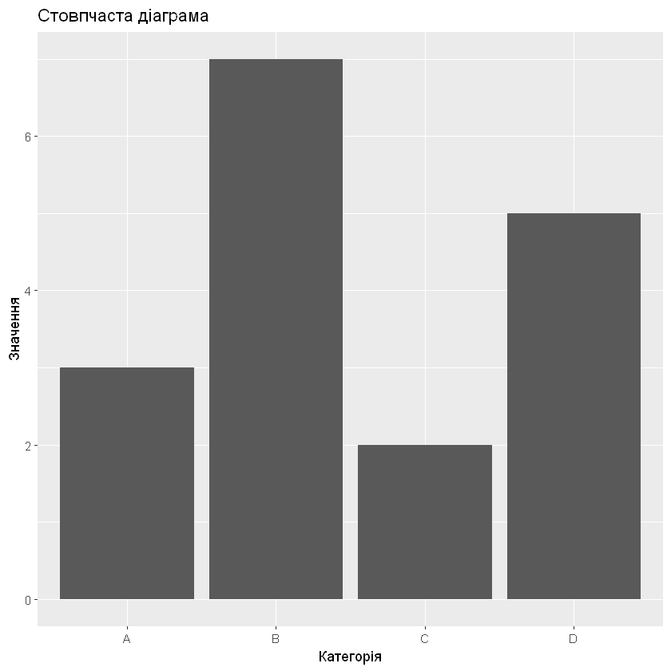
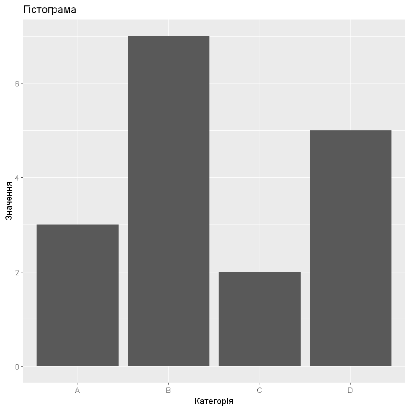
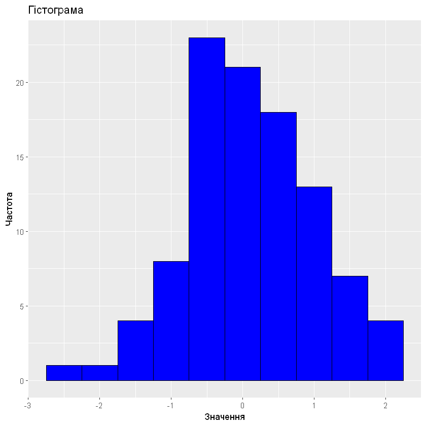
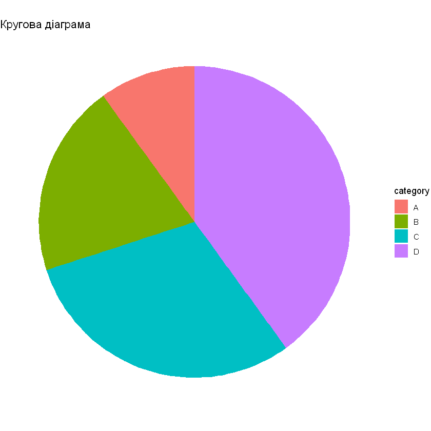
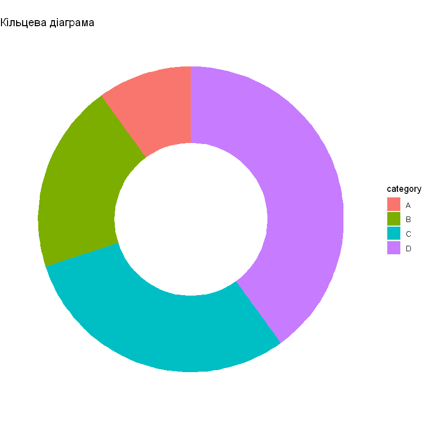
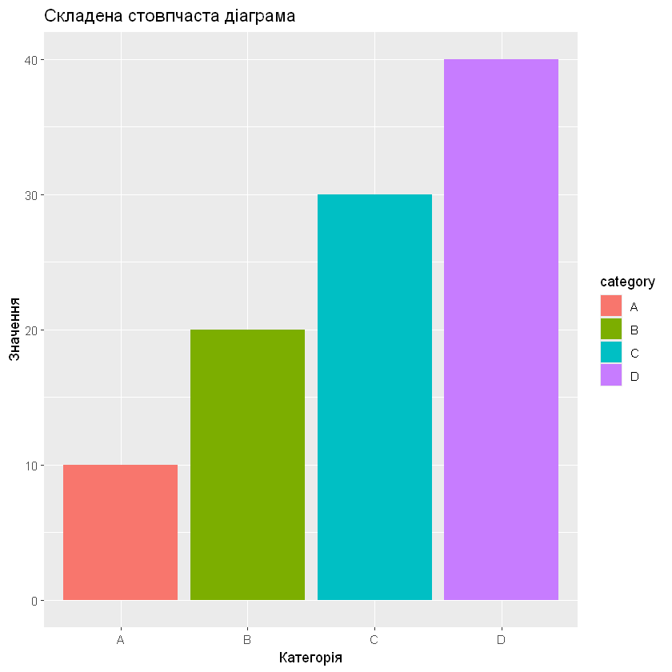
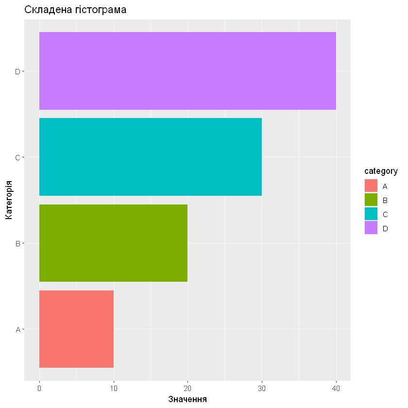
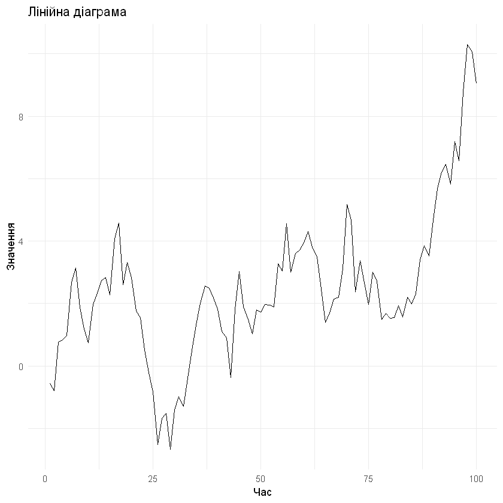

28 EDA, робота з ggplot2
28.1 Дослідницький аналіз даних (EDA)
Дослідницький аналіз даних (EDA) є важливим етапом у процесі науки про дані, який допомагає зрозуміти основну структуру набору даних. Один з найефективніших способів виконання EDA - це використання графічних представлень даних. Графіки можуть виявити шаблони, викиди та взаємозв’язки в даних, які можуть бути неочевидними з сирих даних.
R є популярною мовою програмування для аналізу та візуалізації даних, і однією з найпоширеніших бібліотек для створення високоякісних графіків, готових до публікації, є ggplot2.
Деякі поширені приклади графіків EDA, які можна створити за допомогою ggplot2, включають:
- Точкові діаграми (Scatter plots): Використовуються для візуалізації взаємозв’язку між двома змінними.
- Гістограми (Histograms): Використовуються для візуалізації розподілу однієї змінної.
- Коробкові діаграми (Box plots): Використовуються для візуалізації розподілу змінної та ідентифікації викидів.
- Точкові діаграми (Scatter plot): Використовуються для ідентифікації взаємозв’язків між усіма парами змінних у наборі даних.
- Теплові карти (Heatmaps): Використовуються для візуалізації взаємозв’язку між двома змінними шляхом побудови щільності точок у 2D-просторі.
28.2 Як обрати правильний тип діаграми?
https://rpubs.com/Qemilo/chart_types_choose
https://www.reddit.com/r/Infographics/comments/avrrlk/how_to_choose_the_right_chart_type_infographic/
https://mintea.blog/?p=2305

29 1) Порівняльні графіки
У цих графіках ми порівнюємо одне значення з іншим, наприклад, продажі за регіонами або порівняння економічного показника боулера в крикеті. Ми можемо використовувати наступні графіки для порівняння.
29.1 Стовпчасті діаграми (Column charts)
- Використовуються для порівняння значень між кількома категоріями.
- Категорії розташовані горизонтально (вісь X), а значення - вертикально (вісь Y).
- У стовпчастих діаграмах можна також показати інформацію про частини цілого в різних категоріях, як в абсолютних значеннях, так і у відносних термінах. Тут з’являється концепція складених стовпчастих діаграм і 100% складених стовпчастих діаграм.
29.2 Гістограми (Bar charts)
- Дуже схожі на стовпчасті діаграми, але значення представлені на осі X, а категорії - на осі Y.
- Використовуються для показу значень по категоріях, коли текст категорії або тривалість є довгими.
- Складені гістограми використовуються для порівняння частин цілого (відносних і абсолютних) і порівняння змін по категоріях або часу.
29.3 Лінійні діаграми (Line charts)
- Один з найпопулярніших графіків, широко використовуваний у багатьох галузях.
- Використовуються для показу трендів за часом або категоріями.
- Категорії розташовані горизонтально (вісь X), а значення - вертикально (вісь Y).
29.4 Точкові діаграми (Scatter plots)
- Використовують числові значення вздовж обох осей.
- Корисні для показу кореляції між точками даних, яку може бути важко побачити з самих даних.
- Використовуються для відображення та порівняння числових значень, таких як наукові або статистичні дані.
ggplot(data, aes(x = category, y = value)) +
geom_col() +
labs(title = "Стовпчаста діаграма", x = "Категорія", y = "Значення")
ggplot(data, aes(x = category, y = value)) +
geom_bar(stat = "identity") +
labs(title = "Гістограма", x = "Категорія", y = "Значення")
30 2) Графіки розподілу
Ці графіки використовуються для показу розподілу значень даних по категоріях або безперервних значеннях. Ми можемо використовувати наступні графіки для візуалізації розподілу даних. Наприклад, розподіл помилок, знайдених за 10 тижнів фази тестування програмного забезпечення.
30.1 Гістограма (Histogram)
- Використовується для графічного представлення частоти розподілу.
- Всі стовпчики торкаються один одного без проміжків між ними.
30.2 Коробковий графік (Box plot)
- Також відомий як графік коробки з вусами.
- Лінія в середині коробки - це медіанне значення. Це означає, що 50% даних вище медіанного значення і 50% даних нижче медіанного значення.
- Медіани корисні, оскільки вони не піддаються впливу викидів, як середнє значення.
- У самій коробці є 25% даних вище медіани і 25% даних нижче медіани, тобто 50% даних знаходяться в коробці.
- За допомогою цього графіка ми можемо легко виявити викиди і розподіл даних.
30.3 KDE графік (KDE Plot)
- KDE - це абревіатура від Kernel Density Estimation plot.
- Це гладка форма гістограми.
- KDE графік є методом візуалізації розподілу спостережень у наборі даних, аналогічним гістограмі.
- Відносно гістограми, KDE може створити графік, який є менш захаращеним і більш інтерпретованим, особливо при побудові кількох розподілів.
ggplot(data, aes(x = value)) +
geom_histogram(binwidth = 0.5, fill = "blue", color = "black") +
labs(title = "Гістограма", x = "Значення", y = "Частота")
31 3) Графіки розподілу цілого
Ці графіки використовуються для аналізу того, як різні частини складають ціле. Вони дуже зручні в багатьох сценаріях, коли потрібно проаналізувати внесок доходу за різними регіонами або кількість очок, набраних гравцем у різних частинах поля.
31.1 Кругова діаграма (Pie Chart)
- Використовується для представлення категоричних даних як частини цілого.
- Кожен сегмент представляє відсоток, який займає дана категорія від цілого.
- Краще використовувати кругову діаграму, якщо у вас менше 5 категорій.
31.2 Кільцева діаграма (Donut Chart)
- Варіант кругової діаграми з отвором у центрі.
- Відображає категорії у вигляді дуг, а не сегментів.
31.3 Складена стовпчаста діаграма (Stacked Column Chart)
- Використовується, коли потрібно показати відносний відсоток кількох рядів даних у складених стовпчиках, загальна сума яких завжди дорівнює 100%.
- 100% складена стовпчаста діаграма може показати пропорції частин до цілого з часом, наприклад, пропорцію квартальних продажів за регіонами або пропорцію щомісячного платежу за іпотекою, що йде на відсотки проти основної суми.
31.4 Складена гістограма (Stacked Bar Chart)
- Використовується для показу відносного відсотка кількох рядів даних у складеній гістограмі.
ggplot(data, aes(x = "", y = value, fill = category)) +
geom_bar(width = 1, stat = "identity") +
coord_polar("y", start = 0) +
labs(title = "Кругова діаграма") +
theme_void()
ggplot(data, aes(x = 2, y = value, fill = category)) +
geom_bar(stat = "identity", width = 1) +
coord_polar(theta = "y") +
xlim(0.5, 2.5) +
labs(title = "Кільцева діаграма") +
theme_void()
ggplot(data, aes(x = category, y = value, fill = category)) +
geom_bar(stat = "identity") +
labs(title = "Складена стовпчаста діаграма", x = "Категорія", y = "Значення")
ggplot(data, aes(x = category, y = value, fill = category)) +
geom_bar(stat = "identity") +
coord_flip() +
labs(title = "Складена гістограма", x = "Категорія", y = "Значення")
32 4) Графіки взаємозв’язків
Ці графіки дуже корисні, коли ми хочемо дізнатися, який взаємозв’язок між різними змінними. Графіки, що використовуються для візуалізації взаємозв’язку між змінними, наведені нижче.
32.1 Точкова діаграма (Scatter Plot)
- Точкова діаграма використовує числові значення вздовж обох осей.
- Використовує точки для представлення значень для двох різних числових значень.
- Положення кожної точки на горизонтальній осі та вертикальній осі вказує на значення певної точки даних.
- Корисна для показу кореляції між точками даних, яку може бути важко побачити з самих даних.
- Використовується для відображення та порівняння числових значень, таких як наукові або статистичні дані.
32.2 Лінійна діаграма (Line Chart)
- Як обговорювалося вище, лінійна діаграма також використовується для знаходження взаємозв’язку між двома змінними.
33 5) Графіки трендів
Ці графіки використовуються для візуалізації трендів значень за часом і категоріями, також відомі як дані “часових рядів” у світі даних. Наприклад, відстеження швидкості виконання за овером, зміна температури протягом дня. Нижче наведені графіки, які використовуються для представлення даних часових рядів.
33.1 Лінійна діаграма (Line Chart)
- Найкращий спосіб візуалізувати дані трендів - це лінійна діаграма.
- Лінійні діаграми також використовуються для перегляду трендів у різних доменах.
33.2 Площева діаграма (Area Chart)
- Використовується для перегляду величини значень.
- Показує відносну важливість значень за часом.
- Схожа на лінійну діаграму, але оскільки площа між лініями заповнена, площова діаграма підкреслює величину значень більше, ніж лінійна діаграма.
33.3 Стовпчаста діаграма (Column Chart)
- Стовпчаста діаграма, як обговорювалося вище, також використовується для показу трендів значень за часом і категоріями.
ggplot(data, aes(x = time, y = value)) +
geom_line() +
labs(title = "Лінійна діаграма", x = "Час", y = "Значення") +
theme_minimal()